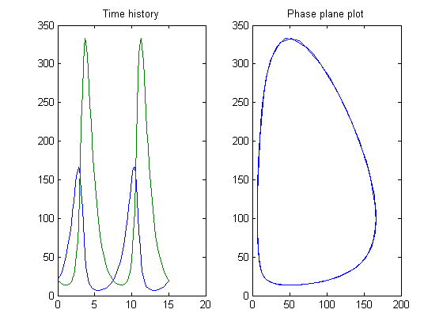
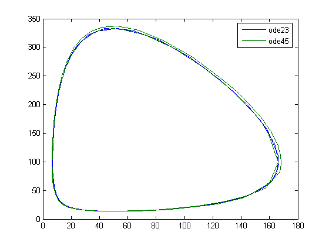

ODE23 and ODE45 are functions for the numerical solution of ordinary differential equations. They employ variable step size Runge-Kutta integration methods. ODE23 uses a simple 2nd and 3rd order pair of formulas for medium accuracy and ODE45 uses a 4th and 5th order pair for higher accuracy. This demo shows their use on a simple differential equation.
Consider the pair of first order ordinary differential equations known as the Lotka-Volterra predator-prey model.
y1' = (1 - alpha*y2)*y1
y2' = (-1 + beta*y1)*y2
The functions y1 and y2 measure the sizes of the prey and predator populations respectively. The quadratic cross term accounts for the interations between the species. Note that the prey population increases when there are no predators, but the predator population decreases when there are no prey.
To simulate a system, create a function M-file that returns a column vector of state derivatives, given state and time values. For this example, we've created a file called LOTKA.M.
type lotka
function yp = lotka(t,y) %LOTKA Lotka-Volterra predator-prey model. % Copyright 1984-2002 The MathWorks, Inc. % $Revision: 5.7 $ $Date: 2002/04/15 03:33:21 $ yp = diag([1 - .01*y(2), -1 + .02*y(1)])*y;
To simulate the differential equation defined in LOTKA over the interval 0 < t < 15, invoke ODE23. Use the default relative accuracy of 1e-3 (0.1 percent).
% Define initial conditions. t0 = 0; tfinal = 15; y0 = [20 20]'; % Simulate the differential equation. tfinal = tfinal*(1+eps); [t,y] = ode23('lotka',[t0 tfinal],y0);
Plot the result of the simulation two different ways.
subplot(1,2,1) plot(t,y) title('Time history') subplot(1,2,2) plot(y(:,1),y(:,2)) title('Phase plane plot')
Now simulate LOTKA using ODE45, instead of ODE23. ODE45 takes longer at each step, but also takes larger steps. Nevertheless, the output of ODE45 is smooth because by default the solver uses a continuous extension formula to produce output at 4 equally spaced time points in the span of each step taken. The plot compares this result against the previous.
[T,Y] = ode45('lotka',[t0 tfinal],y0); subplot(1,1,1) title('Phase plane plot') plot(y(:,1),y(:,2),'-',Y(:,1),Y(:,2),'-'); legend('ode23','ode45')